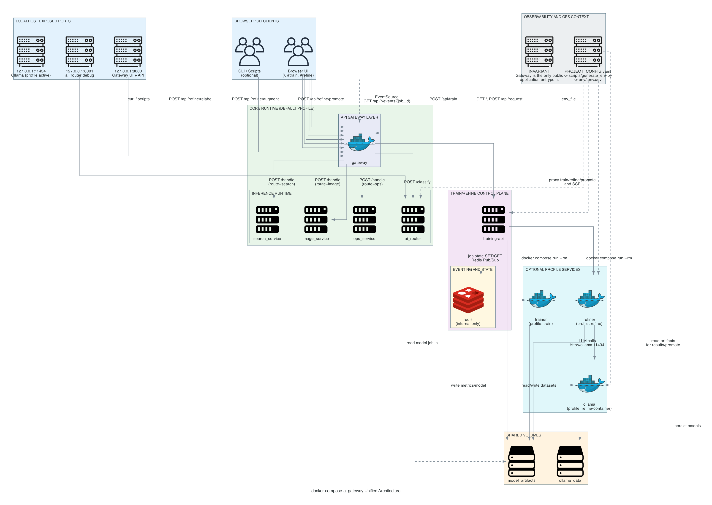

Docker Compose AI Gateway
Self-hosted AI gateway and tooling stack with documented architecture, deployment, and operations workflows.
Content Index
Overview
What This Project Provides
Docker Compose AI Gateway is a locally runnable microservice mesh where an AI classifier routes requests to domain-specific backend services. The gateway serves the UI and API entrypoint, proxies training/refine workflows, and exposes application-level request tracing.
Core Components
- Gateway serves static UI and the main API endpoint
- AI Router classifies intent and returns route + confidence
- Backends (search, image, ops) simulate domain responses
- Trainer optionally trains and emits model artifacts
- Refiner optionally relabels/augments datasets (Ollama)
- Redis + Training API support train/refine job state
Quick Start Commands
# Generate env file for selected environment
python scripts/generate_env.py
# Build and start
docker compose -f compose/docker-compose.yaml up --build -d
# Optional training
docker compose -f compose/docker-compose.yaml --profile train run --rm trainer
# Optional refine actions
docker compose -f compose/docker-compose.yaml --profile refine run --rm training-api relabel
docker compose -f compose/docker-compose.yaml --profile refine run --rm training-api augment
./scripts/promote.shGetting Started
Prerequisites
- Docker and Docker Compose installed
- Python 3 available for helper scripts
- Access to required API credentials for selected providers
Optionally use ./scripts/demo.sh run to generate env and
start the stack in one command.
Architecture
System Layout
The stack is organized around a compose-driven runtime, centralized
configuration, and service code under services/. The
gateway routes user requests to AI router and backend services while
training/refine components run behind compose profiles.

Configuration Flow
Project config and generated environment files feed service startup. This keeps configuration explicit and reproducible across machines.
Project Structure
compose/ # Docker Compose definitions
config/ # Authoritative PROJECT_CONFIG.yaml
env/ # Generated .env.<env> files for Compose
services/ # Gateway, router, trainer, backends, training-api
scripts/ # Demo, env generation, promotion utilities
docs/ # Project docs and this GitHub PageDemo Details
Demo Workflow
Use the demo script to run the common lifecycle quickly: generate env, build/start services, run tests, and stop/cleanup. This is the fastest way to validate end-to-end behavior.
# Start stack using demo helper
./scripts/demo.sh run
# Optional dev mode with reload
./scripts/demo.sh run --dev
# Run test routine
./scripts/demo.sh test
# Stop stack
./scripts/demo.sh downFull Runbook
For build, run, stop, scaling, and failure simulation guidance, see the detailed demo document: docs/auxiliary/demo/DEMO.md.
Documentation
Core Documentation
Primary feature and behavior requirements.
System components and interactions.
Implementation-oriented technical reference.
Centralized config and env generation details.
Build/run/stop, scaling, and failure demos.
Verification checklist for expected behavior.
Debug runbook and common failure resolution.
Planning and Refiner Docs
Delivery sequencing and milestones.
Actionable development and integration tasks.
Refinement performance tuning guidance.
Quality gates and promotion tolerance planning.
Conceptual overview of refiner architecture.
Refiner internals and implementation details.
End-to-end flow and handoff states.
Train and Refine GUI Documents
Scope and phased delivery plan for UI pages.
Technical design for GUI behavior and integration.
Requirements for train/refine user-facing features.
Execution checklist for GUI implementation tasks.
Detailed instructions used for presentation generation.
Auxiliary and Diagram Docs
How to generate and update architecture diagrams.
Diagram authoring and export instructions.
Guidance used to generate architecture assets.
Metrics shape and field semantics reference.
NotebookLM context and onboarding notes.
Access
Local Service Access
Service endpoints depend on your compose profile and environment. Review compose service mappings and generated environment values for exact ports and hostnames.
Repository
Source, scripts, and configuration are maintained in this repository: github.com/talorlik/docker-compose-ai-gateway.
Security
Security Considerations
- Do not commit real credentials into environment files
- Prefer least-privilege API keys and scoped tokens
- Rotate secrets and verify service exposure in compose configs
- Use isolated environments for testing and experimentation
Support
Operations and Troubleshooting
Start with the troubleshooting docs, then inspect compose logs and service health checks to isolate configuration or runtime issues.
Troubleshooting guide: docs/auxiliary/troubleshooting/DEBUG.md.
Testing Shortcuts
# Run all tests
pytest
# Service examples
pytest services/gateway/tests/ -v
pytest services/ai_router/tests/ -v
pytest services/training-api/tests/ -v
# Integration and e2e
pytest tests/ -vUseful Paths
compose/docker-compose.yamlconfig/PROJECT_CONFIG.yamlscripts/generate_env.pydocs/auxiliary/
License
MIT License
This project is released under the MIT License. See the full license text in: LICENSE.